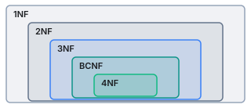

关系数据库设计理论¶
数据依赖对关系模式的影响¶
什么是依赖¶
数据依赖是数据的内在性质，指通过属性之间值是否相等体现的数据之间的相互关系，可以看成现实世界属性之间相互联系的抽象。
数据依赖包括：
- 函数依赖 Functional Dependencies
- 多值依赖 Multivalued Dependencies
- 其他
函数依赖¶
函数依赖，也就是某个属性或属性集确定后，另一个属性就唯一确定了，如同函数表达的映射关系。
一个学校数据库Student(Sno, Sdept, Mname, Cname, Grade)
这个数据库的语义可以解释为：一个系 Sdept 有若干学生 Sno ，一个学生只属于一个系；一个系只有一个主任 Mname ；一个学生可以选修多门课程 Cname ，每门课程有一个成绩；每门课程有若干学生选修。
根据上面的语义，这个数据库的属性的函数依赖有：
Sno -> Sdept
Sdept -> Mname
(Sno, Cname) -> Grade
多值依赖¶
多值依赖是指某一个或某几个属性确定后，剩下的属性完全独立，取值可以自由组合，必须把笛卡尔积的结果全部写进数据库。
申请大学的数据库Apply(SSN, name, Cname, HS, HScity, hobby)
这个数据库存在语义：每个人有唯一美国社会安全号 SSN ；一个人可以在多个高中 HS 上学，有多个爱好，申请多个大学 Cname 。
根据上面的语义，这个数据库的属性存在多值依赖：
SSN ->> Cname
SSN ->> (HS, HScity)
SSN ->> hobby
实际上可以注意到多值依赖描述的是属性或属性集之间的独立性。
数据依赖可能导致的问题¶
数据依赖可能会导致数据库的设计异常，主要包括
-
数据冗余：浪费大量存储空间，比如某些属性重复出现；
-
更新异常：由于数据冗余，更新时维护数据完整性的代价大，比如重复出现的数据都要更改。
-
插入异常：有些数据无法正常插入；
-
删除异常：不该删除的数据不得不删除。
上文的两个例子 Student 和 Apply 就不是好的关系模式。我们追求的是不发生异常，并且数据冗余尽可能小。
因此，需要通过分解关系模式来消除不合适的数据依赖，并且能重构原有模式。
消除不合适的依赖的范式¶
对于不合适的数据依赖，可以依据一些范式进行分解，如图是常见范式的层级关系。

第二范式不常用，因此接下来不提及。
1st Normal Form¶
第一范式要求属性值具有原子性，也就是说一个属性的取值必须是单一值而不能是集合。
Failure
| Student | Major |
|---|---|
| Mary | {CS, EE} |
| Zoe | {CS, GIS} |
这个表就违背了第一范式，因为 Major 这个属性没有原子性了。
BC Normal Form¶
BC范式加强了第三范式，它要求如果表中存在任何函数依赖 A -> B 的话，A 代表的属性或属性集必须能唯一确定一行数据记录。
调整关系表Apply(SSN, name, Cname)
Apply 中存在的函数依赖有：
SSN -> name
(SSN, Cname) -> name
但是对于第一条函数依赖，显然只确定 SSN 时，一行数据无法确定，因为无法确定申请的学校，因此违背了BC范式。
调整的办法是分解为 Student(SSN, name) 和 Apply(SSN, Cname) 。这样学生姓名只存储一遍，减少了数据冗余。
4th Normal Form¶
但是第三范式和BC范式无法处理多值依赖，仍然可能有设计异常的各种问题，因此提出第四范式。
第四范式要求关系模式 \(R\) 中存在的任何多值依赖 \(A \twoheadrightarrow B\) 能满足条件：\(A\) 能够唯一确定一行数据；或者 \(B \subseteq A\) 或者 \(A\cup B=R\) 。
实际上第一个条件也能处理函数依赖的情况，毕竟层级关系就决定了满足 4NF 肯定也满足 BCNF 和 3NF 。
调整关系表Apply(SSN, Cname, HS)
Apply 中存在的多值依赖有：
SSN ->> Cname
SSN ->> HS
但是显然原 Apply 不满足 4NF 要求的任何一条之一，调整的办法是分解为 Apply(SSN, Cname) 和 Highschool(SSN, HS) 。
函数依赖¶
函数依赖的分类¶
-
平凡函数依赖：如果有函数依赖 \(A \to B\) ，能满足 \(B \subseteq A\) 即平凡函数依赖。
-
非平凡函数依赖：如果有函数依赖 \(A \to B\) ，能满足 \(B \subsetneq A\) 即非平凡函数依赖。
-
完全非平凡函数依赖：如果有函数依赖 \(A \to B\) ，能满足 \(A\cup B=\varnothing\) 即完全非平凡函数依赖。
一些规则¶
-
分解规则：\(A \to B_1, \cdots, B_m\) ➡️ \(A \to B_1 \cdots, A \to B_m\)
-
合并规则：\(A \to B_1 \cdots, A \to B_m\) ➡️ \(A \to B_1, \cdots, B_m\)
-
传递规则：\(A \to B, B \to C\) ➡️ \(A \to C\)
属性的闭包¶
给定一个关系表，函数依赖，和一个初始属性集合 \(A\) 。那么 \(A\) 的闭包 \(A^+\) 就是从 \(A\) 出发，根据已有的函数依赖，不断加入能够被确定的属性，直到无法再加入新属性为止。
计算闭包有一些重要的作用，下面主要介绍两种。
-
闭包可以判断某个属性或属性集是否是关系表的超码。
- 给定关系表和函数依赖，如果 \(A^+\) 包含全部属性，那么 \(A\) 就是超码。
-
判断某个函数依赖是否成立。
- 给定一组函数依赖 \(S\) ，如果根据 \(S\) 计算属性集 \(A\) 的闭包 \(A^+\) 满足 \(A^+\) 包含 \(B\) ，那么函数依赖 \(A \to B\) 可以从 \(S\) 推导得出。
如何指定函数依赖？
数据库设计时，只要保留能够推导出所有有效函数依赖的一组依赖，不必重复列出隐含依赖。
BC 范式¶
分解关系模式的要求¶
对于关系模式 \(R(A_1, \cdots , A_n)\) ，把它分解成 \(R1(B_1, \cdots , B_k)\) 和 \(R2(C_1, \cdots , C_m)\) 。正确的分解应该满足
其实就是要求信息没有丢失。
BCNF 的分解方法¶
给出关系表 \(R\) 和它的函数依赖，如何分解成满足 BC 范式、并且无信息丢失的多个关系表呢？
-
选择 \(R\) 的一个子集 \(R'\) ，并且 \(R'\) 包含违背 BCNF 的函数依赖 \(A \to B\) ；
-
把 \(R'\) 分解成 \(R1(A, B)\) 和 \(R2(A, rest)\) ，分别计算两者的函数依赖；
-
如果新的关系表违背了 BCNF ，则回到 1 继续开始，直到所有关系表都满足 BCNF 。
Example
给出关系表 \(R(A, B, C, D)\) ，它有三个函数依赖 \(AB \to C\) ，\(C \to D\) ，\(D \to A\) 。
我们可以发现第二个和第三个函数依赖违背了 BCNF 。
这里以选择从第二个函数依赖开始分解为例：
-
分解成 \(R1(C, D)\) 和 \(R2(C, A, B)\) ；
-
发现 \(R1\) 已经满足 BCNF ，但是 \(R2\) 存在 \(C \to A\) 违背了 BCNF ；
⚠️必须要注意没有显示写出的函数依赖或者说传递依赖！
-
把 \(R2\) 分解成 \(R3(C, A)\) 和 \(R4(C, B)\) ；
-
发现 \(R3\) 和 \(R4\) 已经满足 BCNF ，结束。
因此分解结果就是 \(R1\) 、\(R3\) 和 \(R4\) 。
当然如果一个关系表有多个违背 BCNF 的函数依赖，那么从哪一个开始结果可能不同。
BC 范式和第四范式的局限¶
当然，满足更高的范式也不能保证数据库的设计会更合理，还要考虑查询效率、关系数量等等。对关系模式的分解不是越彻底越好。比如 BCNF 分解就可能导致函数依赖丢失，必要时可以采用条件更弱的 3NF 。
关系模式转换的考虑¶
因此我们在 E/R 图和数据库的设计时可以考虑：
-
对于 \(1:1\) 或 \(1:N\) 的联系，可以在满足范式要求的前提下，尽量合并到适当的实体关系中。
-
对于多值属性，通常拆分成独立的关系，解决多值依赖问题。
-
对于空间数据库，要考虑几何属性可能形成的函数依赖。
词汇
-
Functional Dependencies 函数依赖
-
Multivalued Dependencies 多值依赖
-
Design anomalies 设计异常
-
Redundancy 数据冗余
-
Update anomalies 更新异常
-
Insert anomalies 插入异常
-
Deletion anomalies 删除异常
-
Normal form 范式
-
Boyce-Codd Normal Form BC范式
-
Atomic 原子性
-
Trivial FD 平凡函数依赖
-
Nontrivial FD 非平凡函数依赖
-
Completely nontrivial FD 完全非平凡函数依赖